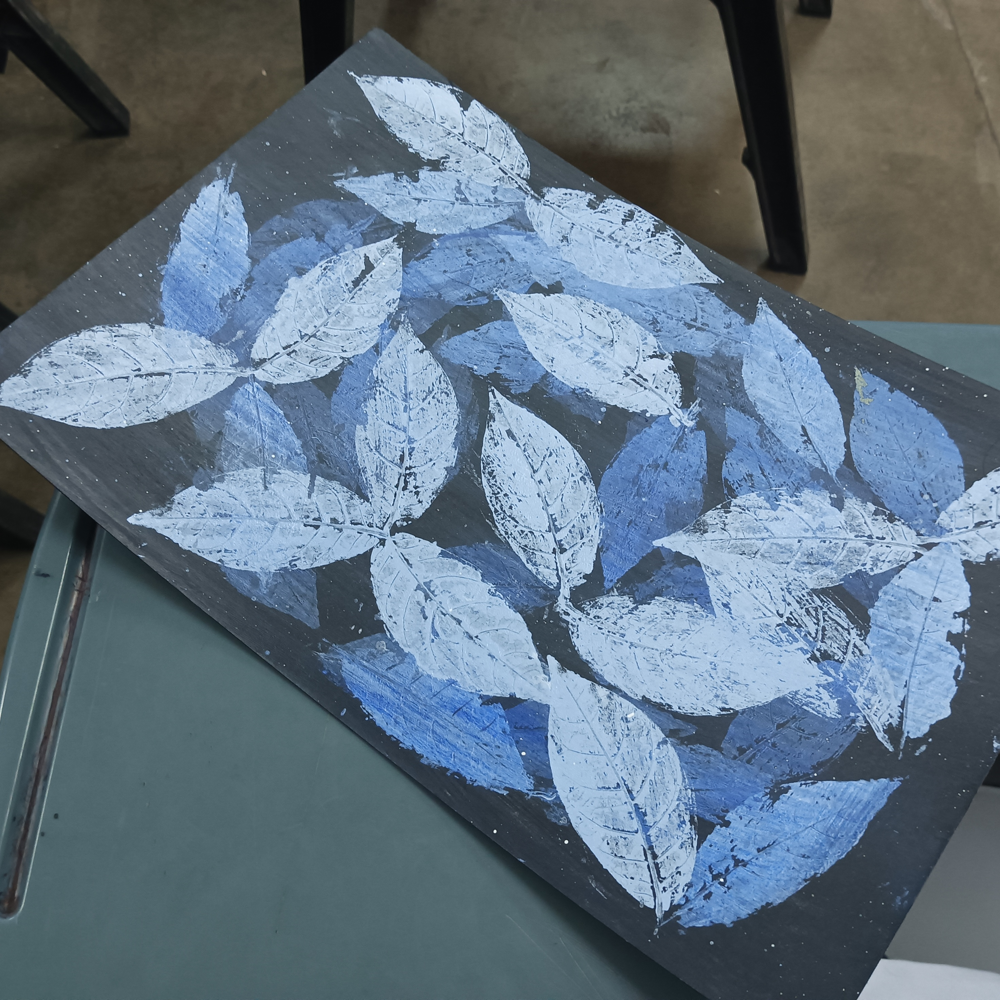
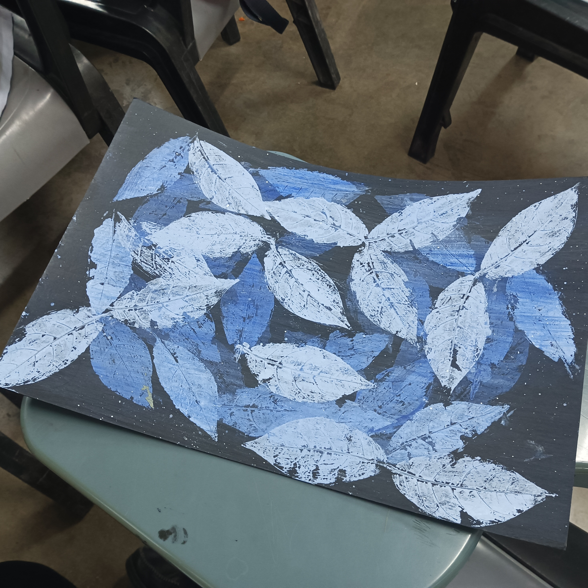
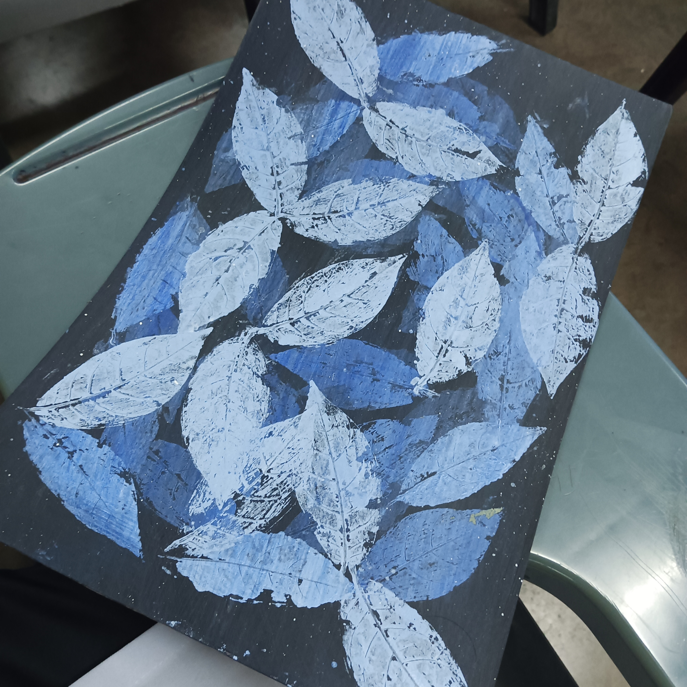
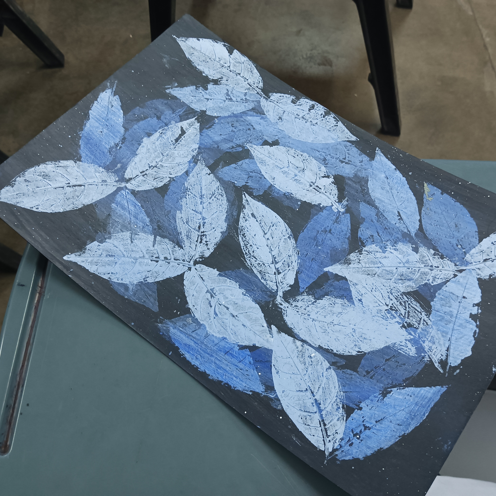
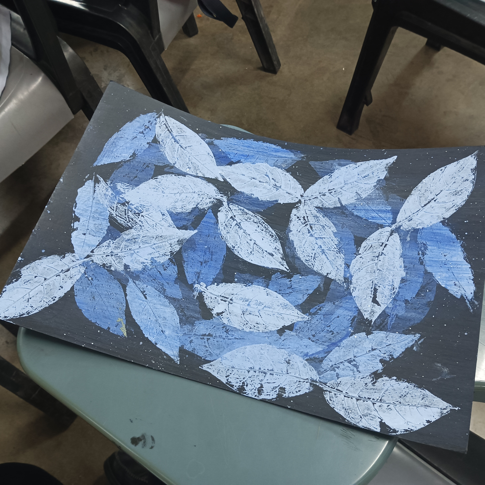
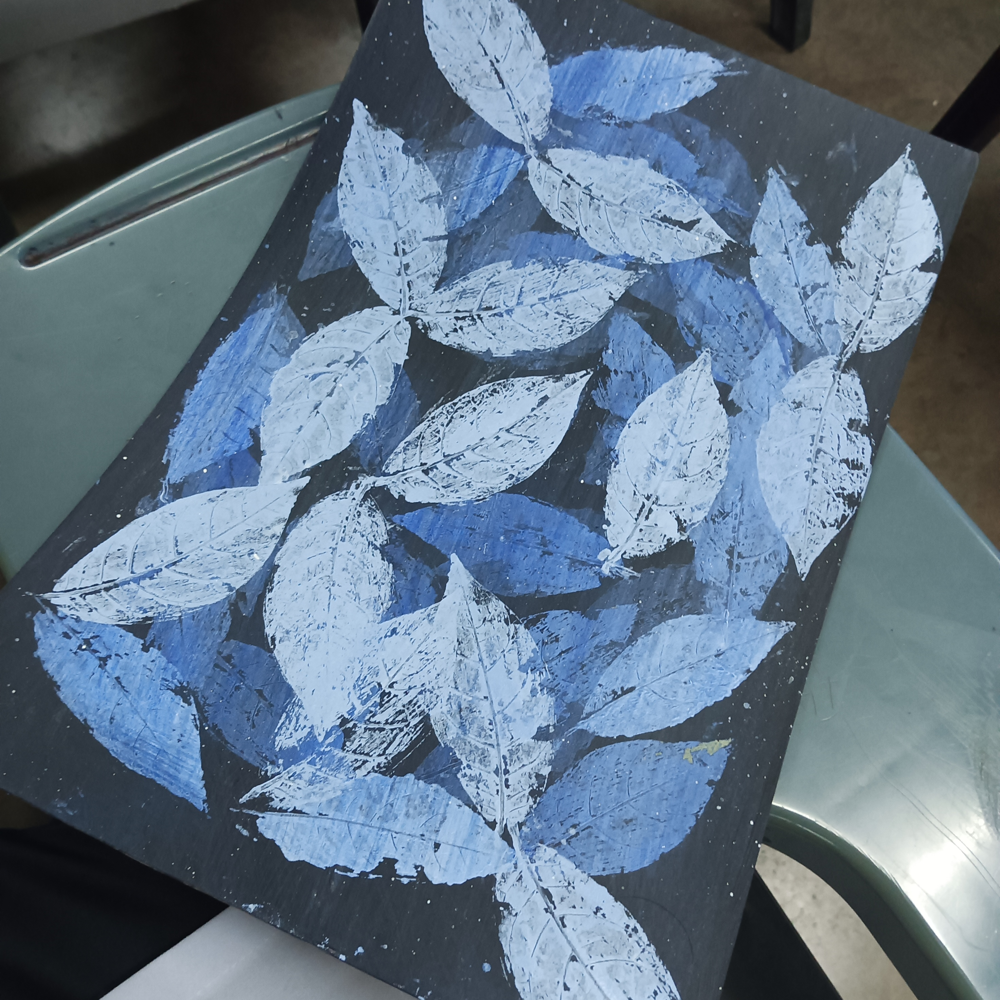

Description: Welcome to "Cosmic Leaves", an exhibit that showcases my love for nature and cosmic art as a student. As a student, I have always been fascinated by the beauty and complexity of the natural world, and this collection of cosmic leaf prints is my way of expressing that fascination. In this exhibit my painting represents a unique intersection of my personal style and the patterns found in leaves, resulting in a display that is both creative and organic. Through this exhibit, I hope to convey my appreciation for the interconnectedness of all things in the universe and inspire others to find their own connections with nature.